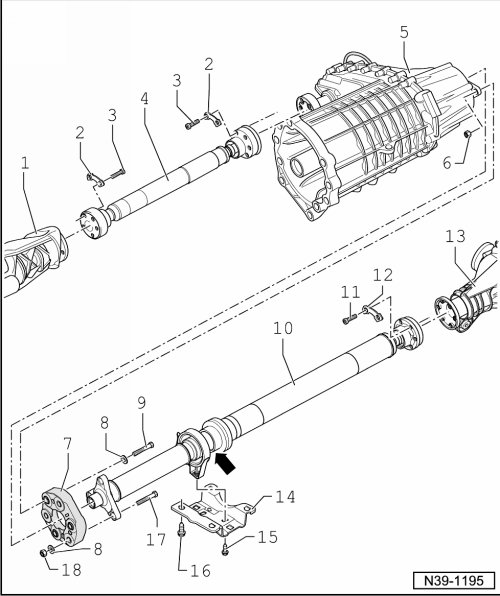

Procedures
Driveshaft Assembly Overview
• No repairs may be performed on the driveshafts.
• Do not flex the rear driveshaft; store and transport extended.
• Store the rear driveshaft with the bracket facing upwards.
• Before removing, mark the positions of all parts in relation to each other. Reinstall in the same position otherwise imbalance will be excessive, the bearings could be damaged causing rumbling noises.
• If the front or rear driveshaft is disconnected only from the transfer case or only from its respective final drive, it must be tied up or supported.
• If customer complaints arise (noises, vibration) regarding the front or rear driveshaft, turn the respective driveshaft on the final drive the distance of one bolt hole before bolting on again. This procedure can be repeated 5 times on the final drives and twice on back of the transfer case.

1 Front final drive
• Colored markings on the driveshaft flange and on the front driveshaft must line up.
2 Lock plate
3 Bolt, 30 Nm and turn 90° further
• Always replace.
4 Front driveshaft
• Installation position: Colored marking on front driveshaft must line up with colored marking on front final drive.
5 Transfer case
6 Nut
• Always replace
7 Flexible disc
• Removing and installing, refer to --> [ Rear Driveshaft Flexible Disc ] Rear Driveshaft Flexible Disc.
8 Washer
9 Bolt, 75 Nm
• Tighten bolt to specification while counter holding on nut --> [ (Item 6) Nut ].
10 Rear driveshaft
• Installation position: Colored marking on rear driveshaft must line up with colored marking on rear final drive.
• To avoid damaging boot in the vicinity of the center bearing - arrow -, rear driveshaft may only be flexed slightly.
11 Bolt, 30 Nm and turn 90° further
• Always replace.
12 Lock plate
13 Rear final drive
14 Bracket
• For center bearing.
15 Bolt, 20 Nm
• On bracket for rear driveshaft.
• To adjust driveshaft center bearing free of tension, loosen and tighten, refer to --> [ Rear Driveshaft Center Bearing ] Rear Driveshaft Center Bearing.
16 Bolt, 60 Nm
• Bracket to body.
17 Bolt
18 Nut, 75 Nm
• Always replace.